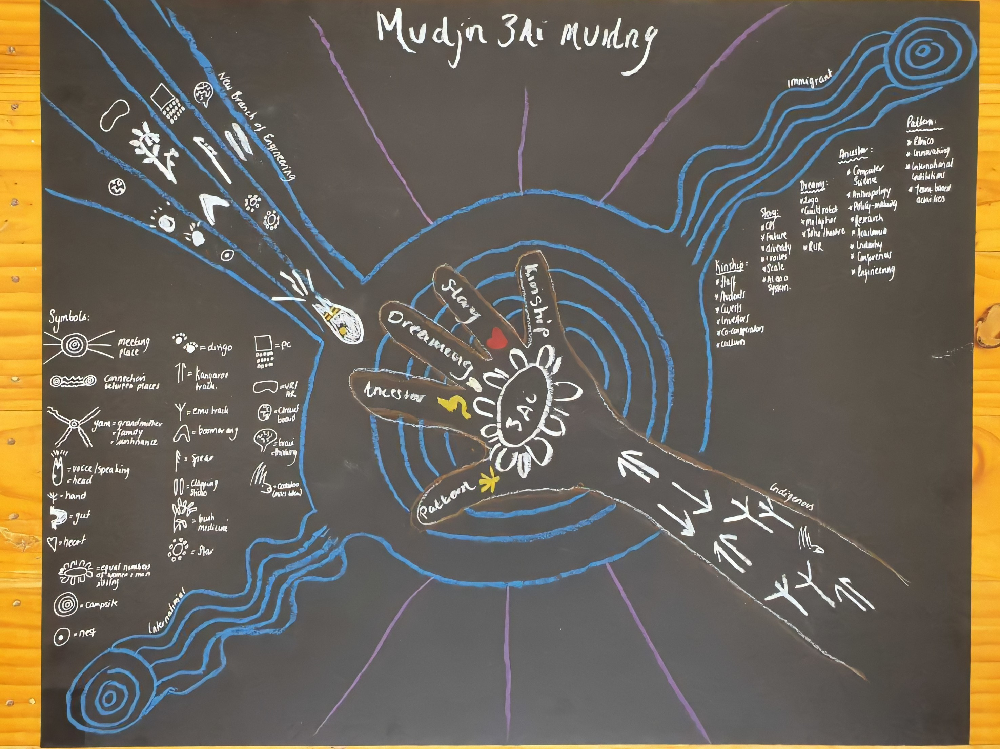
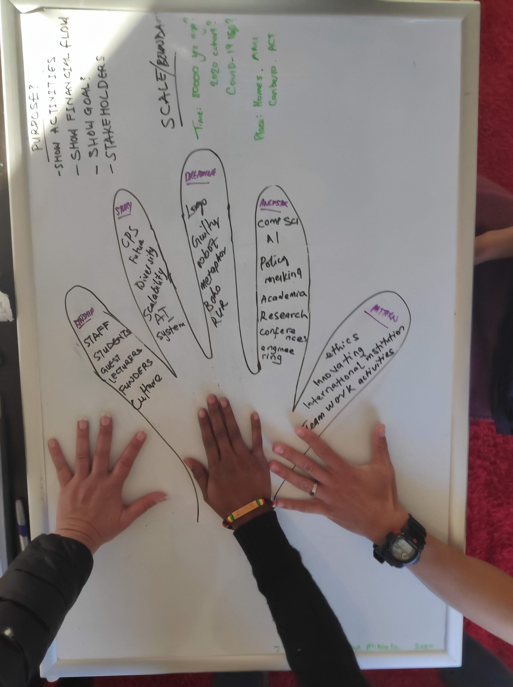

My journey in the 3AInstitute began with an anticipatory excitement to learn ethical engineering practices and the skills professional and practitioners of the new branch of Engineering (NBE) require in conceptualizing and developing scalable and ethical cyber-physical systems (CPSs), questioning existing and future CPSs and their potential impacts, making informed decisions, and becoming a driving force in making relevant changes in how we think, approach, design and deploy autonomous systems in my community. In the first semester of the program, one of the courses I enrolled in was CECS 6001, titled Framing Question About Cyber-Physical Systems.
CESC 6001 is aimed at guiding us on how to critically study and understand CPSs, their components, envision them at scale and ask questions these systems may raise for its environment and humanity. I was really excited about this course because as a kid, I would always ask questions about our origin, being, system, believes, culture, norms from the elders around me (my grandparents mostly) to learn and for clarity about surrounding systems. That part of me was became increasingly curbed as I grew, and I was excited to reawaken that "inquisitive spirit" here. This time, not just to understand systems but to solve and avoid some problems technological solutions bring.
In Question Framing, I learned how to:
Examine CPSs and their parts by studying into their history, evolution, context, components (inside and out), ecosystem, limitations, purpose, intent and reliability.
Question CPSs, data, sensors, algorithms, infrastructures and other apparent and concealed components of CPSs given different scenarios when they scale.
Anticipate future systems, use-cases, and challenges
Approach and study systems using an anthropological, artistic, scientific methodologies; futuristically study their life-cycle – highlighting systems potential good and bad use-cases (emphasis on the bad use-cases) - and how that might inform the decisions we make in the early phases of the systems’ designs.
Approach systems using a variety of techniques for framing relevant questions about these systems; and how to decide what approach is best for what system and their context.
Communicate complex concepts and questions about CPSs to diverse audiences in writings, verbally, graphically.
Analyze, understand and represent simple and complex systems using systems mapping.
In this portfolio, I present 3 of 6 tasks I did this semester, all of which were equally challenging, enlightening, and enriching in their own ways. These tasks reflect the key skills I have developed during the duration of the course and are also my 3 proudest and most fulfilling pieces of the 6.
In this piece, I wrote a 1000 words essay studying Smart Toilets in public places – a new but increasingly adopted cyber-physical systems whose good use-cases highlights how helpful it is especially in the health sector and public hygiene as it:
Mitigates the spread of germs and viruses via touchless technologies, auto-flushing and early detection of diseases.
Encourages clean toilet environments.
Enables monitoring public toilets' hygiene.
However, every good technology has the potential to be bad. Including the toilets. To highlight this, I explored:
The history of toilets and how toilets became smart.
What cyber-physical systems are
What makes smart toilets CPSs?
Current use-cases of smart toilets and potential use-cases (from proposed researches and patents)
Where are CPSs used and for what? (to capture trends)
My findings are reflected in the essay and in the questions I raised about smart toilets. Read more here. The essay is intended to be published as an article for the general public with the key message being: Every smart technology collects data which may be intended for some "good". However, with just a change in intent, every good technology can become bad, invasive, and a surveillance tool.
This piece is included in the portfolio because:
It tells the story of my experience with the first CPS that raised concerning question for me years ago, how much I have learned about the system and the increasing questions I have about smart toilets as I explore(d) them.
One of the key skills I have learned in the course is effective communication skill. This piece was my first attempt communicating complex ideas to the general public in writing. It shows my growth as a communicator.
Putting this piece together made me use and build on my research skills -by understanding what smart toilets and CPSs are, looking into what existed before smart toilets and how they had evolved, investigating the components inside smart toilets (curated from many research publications), studying their ecosystem, and attempting to make a narrow prediction of what it can become.
Working iteratively on this piece based on detailed feedbacks from the 3AI staff made me reflect on what CPSs are, the key message I want to pass and how that frames the whole story. Each iteration made me realize how key my audience and the message are in storytelling
This presents the Moonlight tales - a storytelling system made of a network of cyber-physical cushions. The system captures real-time data about its physical environment through its embedded sensors and delivers custom storytelling experiences to its audience using machine learning algorithms. The system design is focused on in-person social interactions and physical responses.
This is an imagined future CPS by me and my teammate Teff, where cushions and humans are the central part of it. This system is aimed at bringing people together both in public and private places. Many technologies have been designed to connect us, but they also result in disconnections, promoting individuality and isolation; this trend does not appear to be changing anytime soon. The system was the designed to answer a guiding question we had - can we design a system that incentivises people to come together and be entertained? More about the Moonlight tales storytelling system can be read here
This piece is included in the portfolio because:
It shows how I have grown from trying to understand what CPSs are in the first piece (Smart Toilets) to designing a detailed CPS Prototype (from ideation to anticipating the challenges of deploying it at scaling)
One of the key skills I have learned in the course is being about to anticipate future events from past and current trends. This piece reflects how I have put that into practice by:
Looking into the cultural activities relating to the use of cushions.
Reading scientific researches and watching smart cushion demos
Exploring existing technologies and imagining what future technologies they be produced from them
Anticipating its use-cases when it scales, what could go wrong? how to ensure it scales and its continuous development
Imagining how it could be used for other agenda if the intent changes after it is deployed
Studying current social trend around (isolating and overwhelming) tech like social media and COVID-19 and what system might be able to disrupt this?
Putting this piece together required us to study existing smart cushions, tearing them apart to "see" their components. This made me understand CPSs outside their visible functionalities and components. It forced us to investigate how their components are connected and their interaction and how they interact with external systems to function as intended.
This piece also reflects a dying culture (Tales by Moonlight) I was opportune to experience as a child, and how we tried to exploit the growing trends (social media and smart technologies) in reawakening it and encouraging social interactions.
In this piece, we show that technology can unite just like it can isolate. It can be a tool to reviving physical social interactions in public places, encouraging togetherness, and reintroducing what we perceive to be fading cultural values.
Lastly, as opposed to my approach in smart toilets where I explicitly asked the audience leading questions, here, we made visible some components (like the heartbeat sensors) of the system to see what questions it raise in them, and how this might encourage them to question other systems around them. Would they be concerned about the data collected and how this system purely intended for good can be exploited?
This represent a map of the 3AInstitute modeled using the Aboriginal hand framework. Mapping a system as complex as the 3AI was challenging - there were a lot of parts of the system to be considered - the people (staff and students), their origins, their shared vision, the founders, the sponsor, the institute's collaborators, the institute's events, the skills being taught, the institute's researches and social works. All of these are important parts of the system that individually tell us different sides of the system. However, mapping these will result in a really complex map with too many information. This brought us to the Hand framework - an Aboriginal way of approaching or defining systems - the kinship map introduced to us by Mikaela as shown in the images below.

The final 3AI map

The initial 3AI kinship map
Mapping the 3Ai with this framework helped us:
Define the system's boundaries - what we wanted to capture
Focus more on the system, its components and goal rather than the complexities of the system (the interrelationship of the components and the system to other systems).
Refine our map's purpose. Having such a simple way to map a complex system - eliminating the constraints we had in mapping the system gave us the freedom to focus on what we really want to communicate and not what we can communicate
This resulting map has been submitted in hard copy. The details of our journey and how we came about the map can be found in the cover sheet and the group's narrative of the map can be found here
This piece is included in the portfolio because:
The task appeared simple but mapping a complex system simply was not an easy task to achieve. The more we researched and learned about the system, the more information we had to share - making it more complicated than we had thought. This made me realize the important of defining the purpose and boundary of systems mapping, especially in complex systems; there will plenty of information to map about a system, setting the boundary gives a sense of direction and an area of focus
Learning about the Kinship map and working with made me reflect on I had always mapped systems using organizational charts - the way I knew how to map organizational systems - and how limiting that have been in mapping complex systems. It also made me question the way I approach other problems. Are the techniques I am familiar and comfortable with limiting? What other useful approaches am I ignorant of?
After learning about systems thinking and how every part of a system and their connections is important, it became really difficult to determine what to leave out - how do we capture every detail about this system? How do we ensure no important data is missing? After so many iterations created two maps - an organizational chart and the kinship hand diagram, the hand diagram captured the complexity better and presented them in a really simple format.
In the final version of the map, we incorporated Aboriginal arts to show people's roots (origins), water flow, 3Ai as a meeting place, movements towards a direction, speaking out and asking questions, tools, etc.
Overall, I learned a lot as I worked on the map - system analysis and mapping, the challenges of mapping complex and dynamic systems, the Aboriginal hand framework, the Aboriginal arts and symbols. It opened my eyes to a new way of approaching systems
As we march towards the new branch of engineering that ensures the ethical deployment of AI and cyber-physical systems, working on these tasks both individually and collaboratively did give me a way to apply all I have learnt so far in the first semester which includes - framing questions about systems and their building blocks, their effects on the ecosystem and the human (and animal) race, information theory, systems and control theory, communicating complex concepts via videos, written stories, arts, metaphors, etc., to diverse audience. It also made me question my prior knowledge and approaches, in the process did a lot of unlearning and relearning, exposing me to a range of new approaches and technologies to question, investigate and study systems.